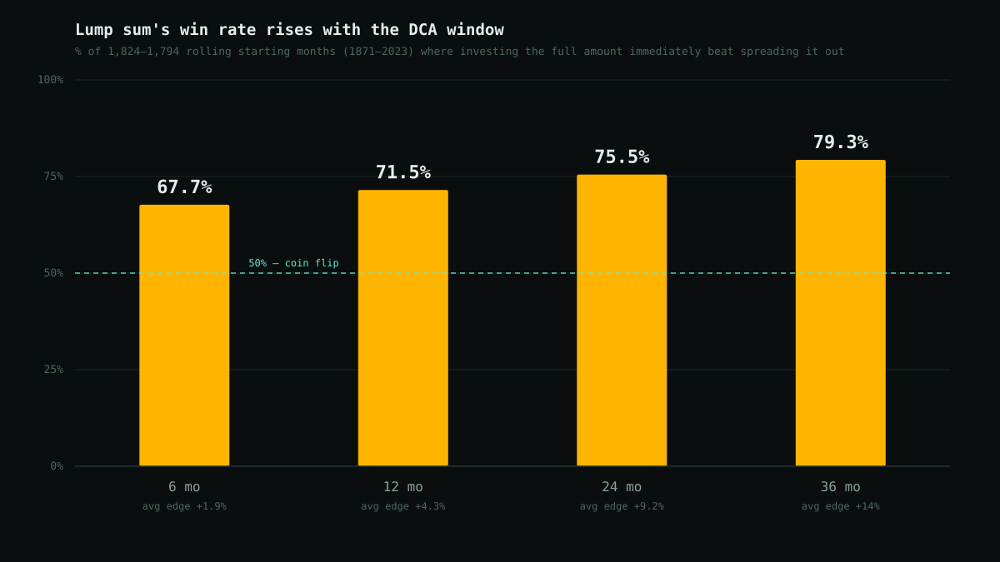
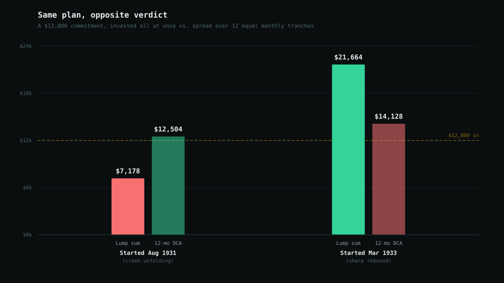

Lump Sum vs. Dollar-Cost Averaging: A 152-Year Test
Get a windfall — a bonus, an inheritance, a sale — and you'll run into the same piece of advice everywhere from Bogleheads threads to robo-advisor onboarding flows: don't put it all in at once, spread it out over a few months to smooth the ride. It's framed as the cautious choice, the one that protects you from bad timing. It's also a claim with a specific, checkable counter-argument behind it: Vanguard's own research (a 2012 study, revisited in 2023) found that investing a lump sum immediately beat phasing it in over 12 months in roughly two-thirds of historical periods, because money out of the market is money not earning the market's long-run positive drift. That's a specific, falsifiable claim, so I ran 152 years of data through it myself.
Short version: lump sum wins more often than not, and its edge grows the longer the phase-in period is — but the times it loses are not evenly scattered across history. They cluster hard around one of the most violent 24-month stretches the market has ever had, which is exactly the scenario dollar-cost averaging (DCA) is sold as protection against.
Methodology
I used Robert Shiller's monthly S&P 500 dataset (price, dividends, CPI, cyclically-adjusted P/E), the same source used in this blog's leverage backtest, covering January 1871 through the most recent fully-populated month, June 2023 — 152 years, 1,830 months. For every possible starting month, I compared two ways of deploying a fixed sum:
- Lump sum — the full amount invested immediately in the S&P 500 (price return plus dividends, reinvested monthly).
- DCA — the same amount split into equal monthly tranches invested at the start of each month over a window of 6, 12, 24, or 36 months, with un-deployed cash sitting on the sidelines earning 0% until its turn comes.
Both strategies are measured at the same end date — the close of the window — so this is a pure test of timing, not of anything else. 0% on undeployed cash is a deliberately conservative assumption for DCA: a real DCA plan usually parks the waiting cash in a money-market fund earning something. That means every number below should be read as an upper bound on lump sum's edge.
The headline numbers
Across every rolling window from 1871 through however far back a full window fits, testing four different DCA lengths:
| DCA window | n | Lump wins | Mean edge | Median edge | P10 | P90 | Worst for lump | Best for lump |
|---|---|---|---|---|---|---|---|---|
| 6 mo | 1,824 | 67.7% | +1.9% | +2.2% | −5.0% | +8.3% | −25.7% | +39.5% |
| 12 mo | 1,818 | 71.5% | +4.3% | +4.5% | −7.7% | +15.6% | −42.6% | +53.3% |
| 24 mo | 1,806 | 75.5% | +9.2% | +9.3% | −9.2% | +27.4% | −48.2% | +80.0% |
| 36 mo | 1,794 | 79.3% | +14.0% | +13.9% | −8.3% | +37.6% | −56.0% | +91.9% |
n = number of rolling starting months tested. "Lump wins" = % of windows where investing immediately beat the DCA plan by the end date. Edge = lump sum's ending value ÷ DCA's ending value, minus 1. P10/P90 = 10th/90th percentile of that edge across all windows.

Two things stand out. First: lump sum's edge is not a coin flip that happens to lean its way — it wins comfortably more often than not at every window length tested, and the gap over 50% widens as the DCA period stretches. Second: the "worst for lump sum" column is genuinely ugly — a 36-month DCA plan can beat lump sum by 56%, meaning there are real historical windows where phasing in wasn't just a smoother ride, it was dramatically the better outcome.
Why does the edge grow with the window?
This isn't volatility drag, the mechanism behind the leverage post's findings — it's simpler than that. DCA's whole cost is opportunity cost: money waiting to be deployed earns nothing (in this model) while the market, on average, drifts upward. The longer the waiting period, the more months of that drift a DCA plan forgoes on its later tranches. A 36-month DCA plan still has a third of its capital sitting in cash after two full years have passed. That's a long time to bet against the market's historical tendency to go up.
When it flips: the 1930s, in one comparison
Averages hide where the exceptions live. The single worst 12-month window for lump sum in the entire 152-year sample starts in August 1931; the single best starts in March 1933 — twenty months apart, in the same Depression-era crash-and-rebound. Run the same $12,000 hypothetical plan through both:

Starting into the teeth of a collapsing market, DCA's later tranches buy in at progressively lower prices, cutting the damage — a lump sum investor in August 1931 lost 40% in a year, a DCA investor in the identical plan was essentially flat. Starting at the bottom of that same collapse, the exact opposite mechanism punishes DCA — most of its capital was still in cash while the market rocketed off its low, and it captured only a fraction of an 80%+ rebound that a lump sum investor got in full.
It's the same trade-off from two sides: DCA is a bet against whatever happens between now and full deployment being a strong move in either direction. Most of the time nothing that dramatic happens, and it just quietly costs the average positive drift. In the rare stretch when something dramatic does happen, DCA's outcome depends entirely on which direction it goes — and nobody can tell in advance which one they're in.
By decade
Zooming out to every decade in the sample (12-month window) makes the same point: the 1930s is the only decade where lump sum's win rate falls to a coin flip.
| Decade | n | Lump wins |
|---|---|---|
| 1870s | 108 | 73.1% |
| 1880s | 120 | 69.2% |
| 1890s | 120 | 63.3% |
| 1900s | 120 | 70.8% |
| 1910s | 120 | 58.3% |
| 1920s | 120 | 79.2% |
| 1930s | 120 | 50.0% |
| 1940s | 120 | 71.7% |
| 1950s | 120 | 82.5% |
| 1960s | 120 | 70.8% |
| 1970s | 120 | 68.3% |
| 1980s | 120 | 75.8% |
| 1990s | 120 | 95.0% |
| 2000s | 120 | 60.0% |
| 2010s | 120 | 86.7% |
| 2020s* | 30 | 60.0% |
*2020s is a partial decade (through the last starting month a full 12-month window fits). The 1990s' 95% and 1930s' 50% are the two extremes of the entire sample.
Does today's stretched valuation change the calculus?
This blog's CAPE ratio post found that starting valuation really does predict weaker forward 10-year returns, and noted CAPE sitting near 42 as of August 2026 — a level seen only once before, at the dot-com peak. If lump sum's edge comes from betting on the market's average forward drift, a fair question is whether that edge shrinks when the market is expensive and forward drift is likely to be lower. Splitting the 12-month sample into thirds by the CAPE ratio at the start of each window:
| Starting CAPE | Range | n | Lump wins | Mean edge |
|---|---|---|---|---|
| Cheap (bottom third) | 4.8–13.7 | 566 | 75.6% | +6.6% |
| Middle third | 13.7–19.0 | 566 | 65.4% | +3.1% |
| Expensive (top third) | 19.0–44.2 | 566 | 72.4% | +3.1% |
Today's CAPE (~42) sits at the very top of that "expensive" bucket. The relationship isn't a clean straight line — the middle third actually has the weakest case for lump sum, not the top third — but the pattern that does hold is that lump sum's win rate stays a clear majority even in the most expensive third of history, while its average edge roughly halves compared to cheap-market starts. In other words: expensive valuations don't flip the answer, they just make the reward for getting it right smaller — which is a real difference, not a rounding error, and worth knowing if you're weighing this decision today rather than at some valuation-neutral average point in history.
Bottom line
- Lump sum wins more often than not at every horizon tested — 68% to 79% of rolling 152-year windows, even under an assumption (0% cash yield) that's stacked in DCA's favor.
- The edge grows with the DCA window length — the longer money sits on the sidelines, the more of the market's average drift it forgoes.
- DCA's wins aren't random noise — they cluster around sharp reversals, and by definition nobody can identify one of those in advance. The 1930s is the one decade in 152 years where lump sum was a coin flip, and it was the most violent decade in the sample.
- Stretched valuations shrink lump sum's edge but don't erase it. Even in the most expensive third of history — where today's market sits — lump sum still won about 72% of 12-month windows.
So: the "invest it all now" case holds up well as a historical average. The case for DCA was never really about beating that average — it's a bet that you, personally, are more likely to stay invested through a plan that phases in slowly than through one that commits everything on day one. That's a real consideration. It's just a different question than the one "DCA wins more often" tries to answer, and the data says the honest answer to that question is no.